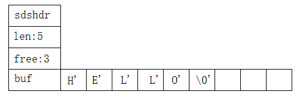

- AQS 万字图文全面解析.md.html
- Docker 镜像构建原理及源码分析.md.html
- ElasticSearch 小白从入门到精通.md.html
- JVM CPU Profiler技术原理及源码深度解析.md.html
- JVM 垃圾收集器.md.html
- JVM 面试的 30 个知识点.md.html
- Java IO 体系、线程模型大总结.md.html
- Java NIO浅析.md.html
- Java 面试题集锦（网络篇）.md.html
- Java-直接内存 DirectMemory 详解.md.html
- Java中9种常见的CMS GC问题分析与解决（上）.md.html
- Java中9种常见的CMS GC问题分析与解决（下）.md.html
- Java中的SPI.md.html
- Java中的ThreadLocal.md.html
- Java线程池实现原理及其在美团业务中的实践.md.html
- Java魔法类：Unsafe应用解析.md.html
- Kafka 源码阅读笔记.md.html
- Kafka、ActiveMQ、RabbitMQ、RocketMQ 区别以及高可用原理.md.html
- MySQL · 引擎特性 · InnoDB Buffer Pool.md.html
- MySQL · 引擎特性 · InnoDB IO子系统.md.html
- MySQL · 引擎特性 · InnoDB 事务系统.md.html
- MySQL · 引擎特性 · InnoDB 同步机制.md.html
- MySQL · 引擎特性 · InnoDB 数据页解析.md.html
- MySQL · 引擎特性 · InnoDB崩溃恢复.md.html
- MySQL · 引擎特性 · 临时表那些事儿.md.html
- MySQL 主从复制 半同步复制.md.html
- MySQL 主从复制 基于GTID复制.md.html
- MySQL 主从复制.md.html
- MySQL 事务日志(redo log和undo log).md.html
- MySQL 亿级别数据迁移实战代码分享.md.html
- MySQL 从一条数据说起-InnoDB行存储数据结构.md.html
- MySQL 地基基础：事务和锁的面纱.md.html
- MySQL 地基基础：数据字典.md.html
- MySQL 地基基础：数据库字符集.md.html
- MySQL 性能优化：碎片整理.md.html
- MySQL 故障诊断：一个 ALTER TALBE 执行了很久，你慌不慌？.md.html
- MySQL 故障诊断：如何在日志中轻松定位大事务.md.html
- MySQL 故障诊断：教你快速定位加锁的 SQL.md.html
- MySQL 日志详解.md.html
- MySQL 的半同步是什么？.md.html
- MySQL中的事务和MVCC.md.html
- MySQL事务_事务隔离级别详解.md.html
- MySQL优化：优化 select count().md.html
- MySQL共享锁、排他锁、悲观锁、乐观锁.md.html
- MySQL的MVCC（多版本并发控制）.md.html
- QingStor 对象存储架构设计及最佳实践.md.html
- RocketMQ 面试题集锦.md.html
- SnowFlake 雪花算法生成分布式 ID.md.html
- Spring Boot 2.x 结合 k8s 实现分布式微服务架构.md.html
- Spring Boot 教程：如何开发一个 starter.md.html
- Spring MVC 原理.md.html
- Spring MyBatis和Spring整合的奥秘.md.html
- Spring 帮助你更好的理解Spring循环依赖.md.html
- Spring 循环依赖及解决方式.md.html
- Spring中眼花缭乱的BeanDefinition.md.html
- Vert.x 基础入门.md.html
- eBay 的 Elasticsearch 性能调优实践.md.html
- 不可不说的Java“锁”事.md.html
- 互联网并发限流实战.md.html
- 从ReentrantLock的实现看AQS的原理及应用.md.html
- 从SpringCloud开始，聊微服务架构.md.html
- 全面了解 JDK 线程池实现原理.md.html
- 分布式一致性理论与算法.md.html
- 分布式一致性算法 Raft.md.html
- 分布式唯一 ID 解析.md.html
- 分布式链路追踪：集群管理设计.md.html
- 动态代理种类及原理，你知道多少？.md.html
- 响应式架构与 RxJava 在有赞零售的实践.md.html
- 大数据算法——布隆过滤器.md.html
- 如何优雅地记录操作日志？.md.html
- 如何设计一个亿级消息量的 IM 系统.md.html
- 异步网络模型.md.html
- 当我们在讨论CQRS时，我们在讨论些神马？.md.html
- 彻底理解 MySQL 的索引机制.md.html
- 最全的 116 道 Redis 面试题解答.md.html
- 有赞权限系统(SAM).md.html
- 有赞零售中台建设方法的探索与实践.md.html
- 服务注册与发现原理剖析（Eureka、Zookeeper、Nacos）.md.html
- 深入浅出Cache.md.html
- 深入理解 MySQL 底层实现.md.html
- 漫画讲解 git rebase VS git merge.md.html
- 生成浏览器唯一稳定 ID 的探索.md.html
- 缓存 如何保证缓存与数据库的双写一致性？.md.html
- 网易严选怎么做全链路监控的？.md.html
- 美团万亿级 KV 存储架构与实践.md.html
- 美团点评Kubernetes集群管理实践.md.html
- 美团百亿规模API网关服务Shepherd的设计与实现.md.html
- 解读《阿里巴巴 Java 开发手册》背后的思考.md.html
- 认识 MySQL 和 Redis 的数据一致性问题.md.html
- 进阶：Dockerfile 高阶使用指南及镜像优化.md.html
- 铁总在用的高性能分布式缓存计算框架 Geode.md.html
- 阿里云PolarDB及其共享存储PolarFS技术实现分析（上）.md.html
- 阿里云PolarDB及其共享存储PolarFS技术实现分析（下）.md.html
- 面试最常被问的 Java 后端题.md.html
- 领域驱动设计在互联网业务开发中的实践.md.html
- 领域驱动设计的菱形对称架构.md.html
- 高效构建 Docker 镜像的最佳实践.md.html
最全的 116 道 Redis 面试题解答
一、Redis 基础（27 题）
1. 什么是 Redis？
Redis 是一个开源（BSD 许可）、基于内存、支持多种数据结构的存储系统，可以作为数据库、缓存和消息中间件。它支持的数据结构有字符串（strings）、哈希（hashes）、列表（lists）、集合（sets）、有序集合（sorted sets）等，除此之外还支持 bitmaps、hyperloglogs 和地理空间（ geospatial ）索引半径查询等功能。
它内置了复制（Replication）、LUA 脚本（Lua scripting）、LRU 驱动事件（LRU eviction）、事务（Transactions）和不同级别的磁盘持久化（persistence）功能，并通过 Redis 哨兵（哨兵）和集群（Cluster）保证缓存的高可用性（High availability）。
2. Redis 的数据类型有哪些？
Redis 支持的数据类型有：
| 类型 | 简介 | 特性 | 场景 |
|---|---|---|---|
| String（字符串） | 二进制安全 | 可以包含任何数据，比如 JPG 图片或者序列化的对象，一个键最大能存储 512M | 简短的字符场景 |
| Hash（哈希） | 键值对集合，即编程语言中的 Map 类型 | 适合存储对象，并且可以像数据库中 update 一个属性一样只修改某一项属性值（Memcached 中需要取出整个字符串反序列化成对象修改完再序列化存回去） | 存储、读取、修改用户属性 |
| List（列表) | 链表（双向链表) | 增删快，提供了操作某一段元素的 API | ①最新消息排行等功能（比如朋友圈的时间线）； ②消息队列 |
| Set（集合) | 哈希表实现，元素不重复 | ①添加、删除，查找的复杂度都是 O(1) ②为集合提供了求交集、并集、差集等操作 | ①共同好友； ②利用唯一性，统计访问网站的所有独立 IP； ③好友推荐时，根据 tag 求交集，大于某个阈值就可以推荐 |
| Sorted Set（有序集合） | 将 Set 中的元素增加一个权重参数 score，元素按 score 有序排列 | 数据插入集合时，已经进行天然排序 | ①排行榜； ②带权重的消息队列 |
3. 使用 Redis 有哪些好处？
具有以下好处：
- 读取速度快，因为数据存在内存中，所以数据获取快；
- 支持多种数据结构，包括字符串、列表、集合、有序集合、哈希等；
- 支持事务，且操作遵守原子性，即对数据的操作要么都执行，要么都不支持；
- 还拥有其他丰富的功能，队列、主从复制、集群、数据持久化等功能。
4. Redis 相比 Memcached 有哪些优势？
Redis 相比 Memcache 有以下的优势：
- 数据结构：Memcache 只支持 key value 存储方式，Redis 支持更多的数据类型，比如 Key value、hash、list、set、zset；
- 多线程：Memcache 支持多线程，Redis 支持单线程；CPU 利用方面 Memcache 优于 Redis；
- 持久化：Memcache 不支持持久化，Redis 支持持久化；
- 内存利用率：Memcache 高，Redis 低（采用压缩的情况下比 Memcache 高）；
- 过期策略：Memcache 过期后，不删除缓存，会导致下次取数据数据的问题，Redis 有专门线程，清除缓存数据；
- 适用场景：Redis 适用于对读写效率要求都很高，数据处理业务复杂和对安全性要求较高的系统。Redis 只使用单核，而 Memcached 可以使用多核，所以平均每一个核上 Redis 在存储小数据时比 Memcached 性能更高。Memcached 适用于在动态系统中减少数据库负载，提升性能，做缓存，提高性能（适合读多写少，对于数据量比较大，可以采用 sharding）。
5. Memcache 与 Redis 的区别都有哪些？
它们的主要区别有：
- 支持的数据类型不同，Memcache 支持的数据类型简单，只有 key-value，而 Redis 支持多种数据结构，包括字符串、列表、集合、有序集合、哈希等；
- Redis 支持数据持久化，Memcache 不支持数据持久化。如果服务器重启，Memcache 中的数据会被清空，而 Redis 开启持久化的话，重启后可以自动加载数据恢复到内存中；
- 它们的底层结构、实现方式的不同，服务端和客户端通信的协议也不同。
6. Redis 是单进程单线程的吗？
Redis 是单进程单线程的，它可以通过队列技术将并发访问变为串行访问，避免了传统数据库串行控制的开销。
7. 为什么 Redis 需要把所有数据放到内存中？
Redis 将数据放在内存中有一个好处，那就是可以实现最快的对数据读取，如果数据存储在硬盘中，磁盘 I/O 会严重影响 Redis 的性能。而且 Redis 还提供了数据持久化功能，不用担心服务器重启对内存中数据的影响。其次现在硬件越来越便宜的情况下，Redis 的使用也被应用得越来越多，使得它拥有很大的优势。
8. Redis 的同步机制了解是什么？
Redis 支持主从同步、从从同步。如果是第一次进行主从同步，主节点需要使用 bgsave 命令，再将后续修改操作记录到内存的缓冲区，等 RDB 文件全部同步到复制节点，复制节点接受完成后将 RDB 镜像记载到内存中。等加载完成后，复制节点通知主节点将复制期间修改的操作记录同步到复制节点，即可完成同步过程。
9. pipeline 有什么好处，为什么要用 pipeline？
使用 pipeline（管道）的好处在于可以将多次 I/O 往返的时间缩短为一次，但是要求管道中执行的指令间没有因果关系。
用 pipeline 的原因在于可以实现请求/响应服务器的功能，当客户端尚未读取旧响应时，它也可以处理新的请求。如果客户端存在多个命令发送到服务器时，那么客户端无需等待服务端的每次响应才能执行下个命令，只需最后一步从服务端读取回复即可。
10. Redis 最适合的场景？
Redis 是一个开源（BSD 许可），基于内存，支持多种数据结构的存储系统。可以作为数据库、缓存和消息中间件。它支持的数据结构有字符串（strings）、哈希（hashes）、列表（lists）、集合（sets）、有序集合（sorted sets）等，除此之外还支持 bitmaps、hyperloglogs 和地理空间（ geospatial ）索引半径查询等功能。根据它的特性，它适用的场景有：
1. 会话缓存
会话（Session）是存储在服务端的，但是可以设置存储的时候不以文件的方式存储，而是存到 Redis 中，而且 Redis 支持数据持久化，不用担心数据因为服务器重启导致 Session 数据丢失的问题。这样做的好处不只是提高获取会话的速度，也对网站的整体性能有很大的提升。
2. 数据缓存
Redis 支持多种数据结构，经常被用来做缓存中间件使用。缓存的数据不只是包括数据库中的数据，也可以缓存一些需要临时存储的数据，例如 token、会话数据等。
3. 队列
Redis 是支持列表（lists）功能的，可以简单实现一个队列的功能，对数据进行入队、出队操作。实现的队列可以应用到电商的秒杀场景中。
4. 排行榜、计数器
Redis 提供了有序集合，可以对数据进行排名，实现排行榜功能。 其次 Redis 中提供了 incr 对数字加 1 命令，也提供了 decr 对数字减 1 命令，所以可以实现一个简单的计数器功能。
5. 发布、订阅功能
Redis 中提供了发布订阅相关的命令，可以用来做一些跟发布订阅相关的场景应用等。例如简单的消息队列功能等。
11. 什么是 Redis 事务？原理是什么？
Redis 中的事务是一组命令的集合，是 Redis 的最小执行单位。它可以保证一次执行多个命令，每个事务是一个单独的隔离操作，事务中的所有命令都会序列化、按顺序地执行。服务端在执行事务的过程中，不会被其他客户端发送来的命令请求打断。
它的原理是先将属于一个事务的命令发送给 Redis，然后依次执行这些命令。
12. Redis 事务的注意点有哪些？
需要注意的点有：
- Redis 事务是不支持回滚的，不像 MySQL 的事务一样，要么都执行要么都不执行；
- Redis 服务端在执行事务的过程中，不会被其他客户端发送来的命令请求打断。直到事务命令全部执行完毕才会执行其他客户端的命令。
13. Redis 为什么不支持回滚？
Redis 的事务不支持回滚，但是执行的命令有语法错误，Redis 会执行失败，这些问题可以从程序层面捕获并解决。但是如果出现其他问题，则依然会继续执行余下的命令。这样做的原因是因为回滚需要增加很多工作，而不支持回滚则可以保持简单、快速的特性。
14. Redis 如何设置密码及验证密码？
Redis 密码设置有两种方式：
- 修改配置文件，需要重启 Redis。在 redis.conf 中可以找到 requirepass 参数，设置 Redis 的访问密码。配置方法为：
requirepass 访问密码。 - 使用命令设置，不需要重启 Redis。使用命令设置的方法为：
config set requirepass 访问密码。如果需要查询密码，可以使用config get requirepass命令。如果需要验证密码，可以使用 auth 访问密码，再执行config get requirepass获取。
需要注意的是，通过这种方式设置访问密码，如果 redis.conf 配置文件中没有设置对应的访问密码，那么服务器重启后访问密码会失效。
15. Redis 为什么设计成单线程的？
多线程处理会涉及到锁，并且多线程处理会涉及到线程切换而消耗 CPU。采用单线程，避免了不必要的上下文切换和竞争条件。其次 CPU 不是 Redis 的瓶颈，Redis 的瓶颈最有可能是机器内存或者网络带宽。
16. 怎么测试 Redis 的连通性？
通过命令 ping 执行后，会得到回复结果 pong。如果没有得到 pong 的结果说明 Redis 没有正常连通。
17. 怎么理解 Redis 事务？
在 MySQL 中，事务是指一组操作中，要么全部执行，要么全部不执行。而在 Redis 也存在事务的概念。Redis 的事务可以保证一次执行多个命令，每个事务是一个单独的隔离操作，事务中的所有命令都会序列化、按顺序地执行。服务端在执行事务的过程中，不会被其他客户端发送来的命令请求打断。
18. Redis 通讯协议是什么？有什么特点？
Redis 客户端和 Redis 服务器通信时使用的是 RESP（Redis 序列化协议）通讯协议，该协议是专门为 Redis 设计的，但是也可以用于其他客户端和服务器软件项目中。
RESP 的特点为：实现简单、快速解析、可读性好。
19. Redis 单点吞吐量有多少？
单点 TPS 达到 8 万/秒，QPS 达到 10 万/秒。TPS 和 QPS 的意思：
- QPS：应用系统每秒钟最大能接受的用户访问量。每秒钟处理完请求的次数，注意这里是处理完，具体是指发出请求到服务器处理完成功返回结果。可以理解在 Server 中有个 counter，每处理一个请求加 1，1s 后 counter=QPS。
- TPS：每秒钟最大能处理的请求数。每秒钟处理完的事务次数，一个应用系统 1s 能完成多少事务处理，一个事务在分布式处理中，可能会对应多个请求，对于衡量单个接口服务的处理能力，用 QPS 比较合理。
20. Redis 中管道有什么用？
使用 pipeline（管道）的好处在于可以将多次 I/O 往返的时间缩短为一次，但是要求管道中执行的指令间没有因果关系。
21. 修改配置不重启 Redis 会实时生效吗？
因为 Redis 在重启才能加载配置项中的配置，所以需要重启才能生效。针对运行实例，有许多配置选项可以通过 CONFIG SET 命令进行修改，而无需执行任何形式的重启。
从 Redis 2.2 开始，可以从 AOF 切换到 RDB 的快照持久性或其他方式而不需要重启 Redis。检索 'CONFIG GET *' 命令获取更多信息。
但偶尔重新启动是必须的，如为升级 Redis 程序到新的版本，或者当你需要修改某些目前 CONFIG 命令还不支持的配置参数的时候。
22. 可以介绍一些 Redis 常用的安全设置吗？
常用的设置有：
1. 端口设置
只允许信任的客户端发送过来的请求，对其他所有请求都拒绝。如果存在暴露在外网的服务，那么需要使用防火墙阻止外部访问 Redis 端口。
2. 身份验证
使用 Redis 提供的身份验证功能，在 redis.conf 文件中进行配置生效，客户端可以发送（AUTH 密码）命令进行身份认证。
3. 禁用特定的命令集
可以考虑禁止一些容易产生安全问题的命令，预防被人恶意操作。
23. 请介绍一下 Redis 的发布订阅功能
发布订阅是一种消息通信模式，发送者发送消息到某个频道，订阅了该频道的用户都可以接收到消息。该模式由发布者、接收者和频道组成。
24. 请说明一下 Redis 的批量命令与 Pipeline 有什么不同？
它们主要的不同有：
- 原子性不同；批量命令操作需要保证原子性的，Pipeline 执行是非原子性的；
- 支持的命令不同；批量命令操作是一个命令对应多个 key，Pipeline 支持多个命令的执行；
- 实现方式的不同；批量命令操作是由 Redis 服务端实现的，而 Pipeline 是需要服务端和客户端共同实现的。
25. 请介绍一下 Redis 的 Pipeline（管道），以及使用场景
因为 Redis 是基于 TCP 协议的请求/响应服务器，每次通信都需要经过 TCP 协议的三次握手，所以当需要执行的命令足够大时，会产生很大的网络延迟。并且网络的传输时间成本和服务器开销没有计入其中，总的延迟可能更大。Pipeline 主要就是为了解决存在这种情况的场景，对此存在类似的场景都可以考虑使用 Pipeline。
可以适用场景有：如果存在批量数据需要写入 Redis，并且这些数据允许一定比例的写入失败，那么可以使用 Pipeline，后期再对失败的数据进行补偿即可。
26. Redis 常用的业务场景有哪些？
主要常用的业务场景有：
- 对热点数据的缓存；因为 Redis 支持多种数据类型，数据存储在内存中，访问速度块，所以 Redis 很适合用来存储热点数据；
- 限时类业务的实现；可以使用 expire 命令设置 key 的生存时间，到时间后自动删除 key。例如使用在验证码验证、优惠活动等业务场景；
- 计数器的实现；因为 incrby 命令可以实现原子性的递增，所以可以运用于高并发的秒杀活动、分布式序列号的生成。例如限制一个手机号发多少条短信、一个接口一分钟限制多少请求、一个接口一天限制调用多少次等业务场景。
- 排行榜的实现；借助 Sorted Set 进行热点数据的排序。例如：下单量最多的用户排行榜，最热门的帖子（回复最多）等业务场景；
- 分布式锁实现；可以利用 Redis 的 setnx 命令进行。
- 队列机制实现；Redis 提供了
list push和list pop这样的命令，所以能够很方便的执行队列操作。
27. Redis 适用场景有哪些？
适用的场景有：
- 可以应用于高并发读写的热数据中
- 海量数据的读写
- 数据处理业务复杂和对安全性要求较高的系统
- 扩展性要求高的数据中
二、Redis 数据结构指令（16 题）
1. Redis 的一个字符串类型的值能存储最大容量是多少？
字符串类型是最基本的数据类型，是二进制安全的字符串，最大 512M。
2. Redis 常用的哈希命令有哪些？
哈希类型操作命令和方法为：
| 命令 | 说明 | Cli 命令写法 | PHP 写法 |
|---|---|---|---|
| hset | 赋值 | hset key field value |
$redis->hSet(key,field,value); |
| hmset | 赋值多个字段 | hmset key field1 value1 [field2 values] |
$redis->hMset(key,array('field1'=>'value1','field2'=>'value2')); |
| hget | 取值 | hget key field |
$redis->hGet(key,field); |
| hmget | 取多个字段的值 | hmget key field1[field2] |
$redis->hmGet(key,array('field1','field2')); |
| hgetall | 取所有字段的值 | hgetall key |
$redis->hGet(key,array('field1','field2')); |
| hlen | 获取字段的数量 | hlen key |
$redis->hLen(key); |
3. Redis 各个数据类型最大存储量分别是多少？
它们最大存储量分别为：
- Strings 类型：一个 String 类型的 value 最大可以存储 512M；
- List 类型：list 的元素个数最多为 2^32-1 个，也就是 4294967295 个；
- Sets 类型：元素个数最多为 2^32-1 个，也就是 4294967295 个；
- Hashes 类型：键值对个数最多为 2^32-1 个，也就是 4294967295 个；
- Sorted sets 类型：跟 Sets 类型相似。元素个数最多为 2^32-1 个，也就是 4294967295 个。
4. 请介绍一下 Redis 的数据类型 Sorted Set（zset）以及底层实现机制？
zset 的功能和 sets 类似，但是它在集合内的元素是有顺序，不能重复的。所以适合做排行榜之类的功能。
它底层实现机制的实现方式有两种，分别为 ziplist（压缩列表） 或者 skiplist（跳跃表）。它们的区别为：
- 底层使用的数据结构实现不同：ziplist 编码的有序集合对象使用压缩列表作为底层实现，而 skiplist 编码的有序集合对象使用 zset 结构作为底层实现。
- 底层集合元素保存的方式不同；ziplist 中的每个集合元素使用两个紧挨在一起的压缩列表节点来保存，第一个节点保存元素的成员，第二个节点保存元素的分值。并且压缩列表内的集合元素按分值从小到大的顺序进行排列，小的放置在靠近表头的位置，大的放置在靠近表尾的位置。skiplist 的一个 zset 结构同时包含一个字典和一个跳跃表。字典的键保存元素的值，字典的值则保存元素的分值；跳跃表节点的 object 属性保存元素的成员，跳跃表节点的 score 属性保存元素的分值。
- 当有序集合对象保存的元素数量小于 128 个，并且保存的所有元素长度都小于 64 字节时，对象使用 ziplist 编码。否则使用 skiplist 编码。
5. Redis 事务相关的命令有哪几个？
事务从开始到执行会经历的三个阶段：开始事务、命令入队、 执行事务。它以 MULTI 开始一个事务，然后让多个命令入队到事务中，最后通过命令 EXEC 触发执行事务。它们的执行命令有：
| 命令 | 作用 | 使用方法 |
|---|---|---|
| MULTI | 标记一个事务块的开始 | Multi |
| DISCARD | 取消事务、放弃执行事务块的所有命令 | Discard |
| WATCH key [key …] | 监视一个 (或多个) key，如果在事务执行之前这个 (或这些) key 被其他命令所改动，那么事务将被打断 | Watch key |
| EXEC | 执行所有事务块内的命令 | Exec |
| UNWATCH | 取消 WATCH 命令对所有 key 的监视 | Unwatch |
6. Redis key 的过期时间和永久有效分别怎么设置？
可以使用 EXPIRE 和 PERSIST 命令。对一个已经带有生存时间的 key 执行 EXPIRE 命令，新指定的生存时间会取代旧的生存时间。PERSIST 命令可以移除给定 key 的生存时间，将这个 key 从带生存时间转换成持久的。
7. 一个 Redis 实例最多能存放多少的 keys？List、Set、Sorted Set 他们最多能存放多少元素？
Redis 实例最多可以存放 2 的 32 次方 -1 个 keys，只要 Redis 的内存空间足够可以支持，任何的 list、set、sorted set 都可以放 2^32 -1 个元素。
8. Redis 支持哪几种数据结构？
Redis 支持的数据结构主要有：字符串（string）、哈希（Hash）、列表（List）、集合（Set）、有序集合（Sorted set）等五种数据结构类型。
9. 如何设置 Redis 的最大连接数？查看 Redis 的最大连接数？查看 Redis 的当前连接数？
设置 Redis 的最大连接数的命令为：
redis-server -maxclients 100000（连接数）;
查看 Redis 最大连接数的命令为：
config get maxclients
查看 Redis 连接数的命令为：
info 命令
在 redis-cli 中输入 info 命令即可查看。
10. Redis 设置键的生存时间和过期时间有哪些命令？
Redis 提供了过期时间处理函数，可以对指定的键名设置过期时间。如果对键名不设置过期时间也可以使用 DEL 函数对数据进行删除。当用户对一个键名设置了生效时间，我们可以说这个键名存在“生存时间”或“在指定时间后过期”。对键名设置过期时间可以有效地释放键名占用的内存空间，在实际的开发过程中是非常提倡的一种做法。相关命令如下：
| 命令 | 说明 | Cli 命令写法 |
|---|---|---|
| PERSIST | 移除键的过期时间 | PERSIST key-name |
| EXPIRE | 让给定键在指定的秒数之后过期 | EXPIRE key-name seconds |
| EXPIREAT | 将给定键的过期时间设置为给定的 UNIX 时间戳，以秒为单位 | EXPIREAT key-name timestamp |
| PEXPIRE | 让给定键在指定的毫秒数之后过期 | PEXPIRE key-name milliseconds |
| PEXPIREAT | 将一个毫秒级精度的 UNIX 时间戳设置为给定键过期时间 | PEXPIREAT key-name timestamp-milliseconds |
| PTTL | 查看给定键距离过期时间还有多少毫秒 | PTTL key-name |
| TTL | 查看给定键距离过期还有多少秒 | TTL key-name |
11. Redis 的 String 类型使用 SSD 方式实现的好处？
SDS 实现方式相对 C 语言的 String 的好处有：
- 避免缓冲区溢出；对字符修改时，可以根据 len 属性检查空间是否满足要求。
- 常数复杂度获取字符串长度；获取字符串的长度直接读取 len 属性就可以获取。而 C 语言中，因为字符串是简单的字符数组，求长度时内部其实是直接顺序遍历数组内容，找到 '\0' 对应的字符，计算出字符串的长度。复杂度即 O(N)。
- 减少内存分配次数；通过结构中的 len 和 free 两个属性，更好的协助空间预分配以及惰性空间释放。
- 二进制安全；SSD 不是以空字符串来判断是否结束，而是以 len 属性来判断字符串是否结束。而在 C 语言中，字符串要求除了末尾之外不能出现空字符，否则会被程序认为是字符串的结尾。这就使得 C 字符串只能存储文本数据，而不能保存图像，音频等二进制数据。
- 兼容 C 字符串函数；可以重用 C 语言库的 的一部分函数。
以上几点好处可以概括如下：
| C 字符串 | SDS |
|---|---|
| 获取字符串长度的复杂度为 O(N) | 获取字符串长度的复杂度为 O(1) |
| API 是不安全的，可能会造成缓冲区溢出 | API 是安全的，不会造成缓冲区溢出 |
| 修改字符串长度 N 次必然需要执行 N 次内存重分配 | 修改字符串长度 N 次最多需要执行 N 次内存重分配 |
| 只能保存文本数据 | 可以保存文本或者二进制数据 |
| 可以使用所有库中的函数 | 可以使用一部分库的函数 |
12. 请介绍一下 Redis 的 String 类型底层实现？
Redis 底层实现了简单动态字符串的类型（SDS），来表示 String 类型。没有直接使用 C 语言定义的字符串类型。
Redis 底层使用简单动态字符串（simple dynamic string，SDS）的抽象类型实现的。默认以 SDS 作为自己的字符串表示。而没有直接使用 C 语言定义的字符串类型。
SDS 的定义格式如下：
struct sdshdr{
//记录 buf 数组中已使用字节的数量
//等于 SDS 保存字符串的长度
int len;
//记录 buf 数组中未使用字节的数量
int free;
//字节数组，用于保存字符串
char buf[]; //buf的大小等于len+free+1，其中多余的1个字节是用来存储‘\0’的。
}
SDS 的存储示例如下：

13. Redis 的链表数据结构的特征有哪些？
具有以下特征：
- 通过 len 属性来记录链表长度；
- 链表的最前和最后节点都有引用，获取前后节点的复杂度都为 O(1)；
- 对链表的访问都是以 null 结束。
14. Redis 的内存消耗分类有哪些？内存统计使用什么命令？
内存消耗可以分类为：
- 对象内存：该内存占用最大，存储用户的所有数据。包括所有 key 的大小和 value 的大小。
- 缓冲内存：主要有客户端缓存、复制积压缓存、AOF 缓存等；
- 内存碎片：对 key 数据更新，数据过期等都可能产生内存碎片。
可以使用 info 命令来获取内存统计使用信息。
15. 怎么发现 bigkey?
可以使用 redis-cli –bigkeys 命令统计 bigkey 的分布。也可以在生产环节下执行 debug object key 命令查看 serializedlength 属性，获得 key 对应的 value 序列化之后的字节数。
16. 什么是 bigkey？有什么影响？
bigkey 是指键值占用内存空间非常大的 key。例如一个字符串 a 存储了 200M 的数据。
bigkey 的主要影响有：
- 网络阻塞；获取 bigkey 时，传输的数据量比较大，会增加带宽的压力。
- 超时阻塞；因为 bigkey 占用的空间比较大，所以操作起来效率会比较低，导致出现阻塞的可能性增加。
- 导致内存空间不平衡；一个 bigkey 存储数据量比较大，同一个 key 在同一个节点或服务器中存储，会造成一定影响。
三、高并发处理（21 题）
1. Redis 常见性能问题和解决方案有哪些？
Redis 常见性能问题和解决方案如下：
- Master 最好不要做任何持久化工作，如 RDB 内存快照和 AOF 日志文件；
- 如果数据比较重要，某个 Slave 开启 AOF 备份数据，策略设置为每秒同步一次；
- 为了主从复制的速度和连接的稳定性，Master 和 Slave 最好在同一个局域网内；
- 尽量避免在压力很大的主库上增加从库；
- 主从复制不要用图状结构，用单向链表结构更为稳定，即：Master <- Slave1 <- Slave2 <- Slave3….；这样的结构方便解决单点故障问题，实现 Slave 对 Master 的替换。如果 Master 挂了，可以立刻启用 Slave1 做 Master，其他不变。
2. MySQL 里有 2000w 数据，Redis 中只存 20w 的数据，如何保证 Redis 中的数据都是热点数据？
因为内存的空间是有限的，所以 Redis 淘汰机制主要为了解决在某个时间点，Redis 中存在很多过期键，定期删除策略随机抽查时没有抽查到，并且也没有走惰性删除策略时，大量过期键占用内存的问题。如果内存只能存 20w 数据，而我们需要存储 2000w 的数据时，自然就需要对多出来的数据进行删除或覆盖，保证内存中存储的数据都是热数据。所以当 Redis 内存数据集的大小上升到一定数量时，就会执行数据淘汰策略。
3. 假如 Redis 里面有 1 亿个 key，其中有 10w 个 key 是以某个固定的已知的前缀开头的，如果将它们全部找出来？
我们可以使用 keys 命令和 scan 命令，但是会发现使用 scan 更好。
1. 使用 keys 命令
直接使用 keys 命令查询，但是如果是在生产环境下使用会出现一个问题，keys 命令是遍历查询的，查询的时间复杂度为 O(n)，数据量越大查询时间越长。而且 Redis 是单线程，keys 指令会导致线程阻塞一段时间，会导致线上 Redis 停顿一段时间，直到 keys 执行完毕才能恢复。这在生产环境是不允许的。除此之外，需要注意的是，这个命令没有分页功能，会一次性查询出所有符合条件的 key 值，会发现查询结果非常大，输出的信息非常多。所以不推荐使用这个命令。
2. 使用 scan 命令
scan 命令可以实现和 keys 一样的匹配功能，但是 scan 命令在执行的过程不会阻塞线程，并且查找的数据可能存在重复，需要客户端操作去重。因为 scan 是通过游标方式查询的，所以不会导致 Redis 出现假死的问题。Redis 查询过程中会把游标返回给客户端，单次返回空值且游标不为 0，则说明遍历还没结束，客户端继续遍历查询。scan 在检索的过程中，被删除的元素是不会被查询出来的，但是如果在迭代过程中有元素被修改，scan 不能保证查询出对应元素。相对来说，scan 指令查找花费的时间会比 keys 指令长。
4. 什么是缓存穿透？怎么解决？
大量的请求瞬时涌入系统，而这个数据在 Redis 中不存在，所有的请求都落到了数据库上把数据库打死。造成这种情况的原因有系统设计不合理、缓存数据更新不及时，或爬虫等恶意攻击。 解决办法有：
1. 使用布隆过滤器
将查询的参数都存储到一个 bitmap 中，在查询缓存前，再找个新的 bitmap，在里面对参数进行验证。如果验证的 bitmap 中存在，则进行底层缓存的数据查询，如果 bitmap 中不存在查询参数，则进行拦截，不再进行缓存的数据查询。
2. 缓存空对象
如果从数据库查询的结果为空，依然把这个结果进行缓存，那么当用 key 获取数据时，即使数据不存在，Redis 也可以直接返回结果，避免多次访问数据库。
但是缓存空值的缺点是：
- 如果存在黑客恶意的随机访问，造成缓存过多的空值，那么可能造成很多内存空间的浪费。但是也可以对这些数据设置很短的过期时间来控制；
- 如果查询的 key 对应的 Redis 缓存空值没有过期，数据库这时有了新数据，那么会出现数据库和缓存数据不一致的问题。但是可以保证当数据库有数据后更新缓存进行解决。
5. 什么是缓存雪崩？怎么解决？
缓存雪崩是指当大量缓存失效时，大量的请求访问直接请求数据库，导致数据库服务器无法抗住请求或挂掉的情况。这时网站常常会出现 502 错误，导致网站不可用问题。
在预防缓存雪崩时，建议遵守以下几个原则：
- 合理规划缓存的失效时间，可以给缓存时间加一个随机数，防止统一时间过期；
- 合理评估数据库的负载压力，这有利于在合理范围内部分缓存失，数据库也可以正常访问；
- 对数据库进行过载保护或应用层限流，这种情况下一般是在网站处于大流量、高并发时，服务器整体不能承受时，可以采用的一种限流保护措施；
- 最后还可以考虑多级缓存设计，实现缓存的高可用。
6. 如果有大量的 key 需要设置同一时间过期，一般需要注意什么？
如果有大量的 key 在同一时间过期，那么可能同一秒都从数据库获取数据，给数据库造成很大的压力，导致数据库崩溃，系统出现 502 问题。也有可能同时失效，那一刻不用都访问数据库，压力不够大的话，那么 Redis 会出现短暂的卡顿问题。所以为了预防这种问题的发生，最好给数据的过期时间加一个随机值，让过期时间更加分散。
7. Redis 哨兵和集群的区别是什么？
Redis 的哨兵作用是管理多个 Redis 服务器，提供了监控、提醒以及自动的故障转移的功能。哨兵可以保证当主服务器挂了后，可以从从服务器选择一台当主服务器，把别的从服务器转移到读新的主机。Redis 哨兵的主要功能有：
- 集群监控：对 Redis 集群的主从进程进行监控，判断是否正常工作。
- 消息通知：如果存在 Redis 实例有故障，那么哨兵可以发送报警消息通知管理员。
- 故障转移：如果主机（master）节点挂了，那么可以自动转移到从（slave）节点上。
- 配置中心：当存在故障时，对故障进行转移后，配置中心会通知客户端新的主机（master）地址。
Redis 的集群的功能是为了解决单机 Redis 容量有限的问题，将数据按一定的规则分配到多台机器，对内存的每秒访问不受限于单台服务器，可受益于分布式集群高扩展性。
8. Redis 的哨兵有什么功能？
哨兵是 Redis 集群架构中非常重要的一个组件，主要功能如下：
- 集群监控，负责监控 Redis Master 和 Slave 进程是否正常工作；
- 消息通知，如果某个 Redis 实例有故障，那么哨兵负责发送消息作为报警通知给管理员；
- 故障转移，如果 Master node 挂掉了，会自动转移到 Slave node 上；
- 配置中心，如果故障转移发生了，通知 Client 客户端新的 Master 地址。
9. 请介绍几个可能导致 Redis 阻塞的原因
Redis 产生阻塞的原因主要有内部和外部两个原因导致：
1. 内部原因
- 如果 Redis 主机的 CPU 负载过高，也会导致系统崩溃；
- 数据持久化占用资源过多；
- 对 Redis 的 API 或指令使用不合理，导致 Redis 出现问题。
2. 外部原因
外部原因主要是服务器的原因，例如服务器的 CPU 线程在切换过程中竞争过大，内存出现问题、网络问题等。
10. Redis 的同步机制了解么？
Redis 可以使用主从同步、从从同步。第一次同步时，主节点做一次 bgsave，并同时将后续修改操作记录到内存 buffer，待完成后将 RDB 文件全量同步到复制节点，复制节点接受完成后将 RDB 镜像加载到内存。
加载完成后，再通知主节点将期间修改的操作记录同步到复制节点进行重放就完成了同步过程。
11. 如何处理 Redis 集群中 big key 和 hot key？
对于 big key 先分析业务存在大键值是否合理，如果不合理我们可以把它们拆分为多个小的存储。或者看是否可以使用别的存储介质存储这种 big key 解决占用内存空间大的问题。
对于 hot key 我们可以在其他机器上复制这个 key 的备份，让请求进来的时候，去随机的到各台机器上访问缓存。所以剩下的问题就是如何做到让请求平均的分布到各台机器上。
12. 怎么去发现 Redis 阻塞异常情况？
可以从以下两方面准备：
1. 使用 Redis 自身监控系统
使用 Redis 自身监控系统，可以对 CPU、内存、磁盘、命令耗时等阻塞问题进行监控，当监控系统发现各个监控指标存在异常的时候，发送报警。
2. 使用应用服务监控
当 Redis 存在阻塞时，应用响应时间就会延长，应用可以感知发现问题，并发送报警给管理人员。
13. 你知道有哪些 Redis 分区实现方案？
客户端分区就是在客户端就已经决定数据会被存储到哪个 Redis 节点或者从哪个 Redis 节点读取。大多数客户端已经实现了客户端分区。
代理分区意味着客户端将请求发送给代理，然后代理决定去哪个节点写数据或者读数据。代理根据分区规则决定请求哪些 Redis 实例，然后根据 Redis 的响应结果返回给客户端。Redis 和 Memcached 的一种代理实现就是 Twemproxy。
查询路由（Query routing）的意思是客户端随机地请求任意一个 Redis 实例，然后由 Redis 将请求转发给正确的 Redis 节点。
Redis Cluster 实现了一种混合形式的查询路由，但并不是直接将请求从一个 Redis 节点转发到另一个 Redis 节点，而是在客户端的帮助下直接 redirected 到正确的 Redis 节点。
14. Redis 集群之间的复制方式是？
需要知道 Redis 的复制方式前，需要知道主从复制（Master-Slave Replication）的工作原理，具体为：
- Slave 从节点服务启动并连接到 Master 之后，它将主动发送一个 SYNC 命令；
- Master 服务主节点收到同步命令后将启动后台存盘进程，同时收集所有接收到的用于修改数据集的命令，在后台进程执行完毕后，Master 将传送整个数据库文件到 Slave，以完成一次完全同步；
- Slave 从节点服务在接收到数据库文件数据之后将其存盘并加载到内存中；
- 此后，Master 主节点继续将所有已经收集到的修改命令，和新的修改命令依次传送给 Slaves，Slave 将在本次执行这些数据修改命令，从而达到最终的数据同步。
整个执行的过程都是使用异步复制的方式进行复制。
15. 什么是数据库缓存双写一致性？
当一个数据需要更新时，因为不可能做到同时更新数据库和缓存，那么此时读取数据的时候就一定会发生数据不一致问题，而数据不一致问题在金融交易领域的系统中是肯定不允许的。
解决办法：读的时候先读缓存，缓存没有的话，就读数据库，然后取出数据后放入缓存，同时返回响应。更新的时候，先更新数据库，然后再删除缓存。
16. 为什么要做 Redis 分区？
分区可以让 Redis 管理更大的内存，Redis 将可以使用所有机器的内存。如果没有分区，你最多只能使用一台机器的内存。
分区使 Redis 的计算能力通过简单地增加计算机得到成倍提升，Redis 的网络带宽也会随着计算机和网卡的增加而成倍增长。
17. 分布式 Redis 是前期做还是后期规模上来了再做好，为什么？
为防止以后扩容增加难度，最好的办法就是一开始就使用分布式。即便只有一台服务器，也可以一开始就让 Redis 以分布式的方式运行，使用分区，在同一台服务器上启动多个实例。
刚开始操作时比较麻烦，但是当数据不断增长，需要更多的 Redis 服务器时，只需要将 Redis 实例从一台服务迁移到另外一台服务器即可，而不用考虑重新分区的问题。一旦添加了另一台服务器，只需要将一半的 Redis 实例从第一台机器迁移到第二台机器。
18. 如果有大量的 key 需要设置同一时间过期，一般需要注意什么？
如果大量的 key 过期时间设置的过于集中，到过期的那个时间点，redis 可能会出现短暂的卡顿现象。一般需要在时间上加一个随机值，使得过期时间分散一些。
19. 什么是分布式锁？有什么作用？
分布式锁是控制分布式系统之间同步访问共享资源的一种方式。在单机或者单进程环境下，多线程并发的情况下，使用锁来保证一个代码块在同一时间内只能由一个线程执行。比如 Java 的 Synchronized 关键字和 Reentrantlock 类。
分布式锁的作用是当多个进程不在同一个系统中，用分布式锁可以控制多个进程对资源的访问。
20. 分布式锁可以通过什么来实现？
- 可以使用 Memcached 实现分布式锁：Memcached 提供了原子性操作命令 add，线程获取到锁。key 已存在的情况下，则 add 失败，获取锁也失败。
- 也可以使用 Redis 实现分布式锁：Redis 的 setnx 命令为原子性操作命令。只有在 key 不存在的情况下，才能 set 成功。和 Memcached 的 add 方法比较类似。
- 还可以使用 ZooKeeper 分布式锁：利用 ZooKeeper 的顺序临时节点，来实现分布式锁和等待队列。
- 还有 Chubby 实现分布式锁：Chubby 底层利用了 Paxos 一致性算法，实现粗粒度分布式锁服务。
21. 介绍一下分布式锁实现需要注意的事项？
分布式锁实现需要保证以下几点：
- 互斥性：任意时刻，只有一个资源能够获取到锁；
- 容灾性：在未成功释放锁的的情况下，一定时限内能够恢复锁的正常功能；
- 统一性：加锁和解锁保证同一资源来进行操作。
四、持久化（8 题）
1. Redis 中的 bgsave 的原理是什么？
你给出两个词汇就可以了，fork 和 cow。fork 是指 Redis 通过创建子进程来进行 bgsave 操作，cow 指的是 copy on write，子进程创建后，父子进程共享数据段，父进程继续提供读写服务，写脏的页面数据会逐渐和子进程分离开来。
2. 如何选择合适的持久化方式？
在实际的生产环境当中对于选择 RDB 持久化方式还是 AOF 持久化方式都需要根据数据量、应用对数据的安全要求、硬件相关预算等情况综合考虑，同时也可以考虑主从复制的策略，可以设置主机（master）和从机（slave）使用不同的持久化方案。对此以下只是简单的进行一个选择的介绍，具体在实际的开发应用过程中还需要根据实际情况综合选择。
- 如果在一段时间内对 Redis 里的数据完全丢弃也不会有什么影响的情况，那么选择 RDB 持久化方式比选择 AOF 持久化更有利；但是如果需要预防数据秒级别的丢失时，就只能选择 AOF 持久化方式了。
- 当 Redis 的结构是主从架构的情况下，可以考虑使用读写分离来分担 Redis 的读请求压力，也预防主机（master）宕机后继续提供服务。这时候可以采用这样一种策略：关闭主机（master）的持久化功能，这样保持主机（master）的高效性，然后关闭从机（slave）的 RDB 持久化，开启 AOF 持久化，同时建议关闭 AOF 的自动重写功能，通过设置一个定时任务，在应用访问次数比较少的时间点再通过调用 bgrewriteaof 命令进行自动重写，为了防止持久化数据的丢失，建议设置一个定时器在某个时间点对持久化文件进行备份并标记好备份时间点。
3. Redis 持久化数据和缓存怎么做扩容？
如果 Redis 被当做缓存使用，使用一致性哈希实现动态扩容缩容。
如果 Redis 被当做一个持久化存储使用，必须使用固定的 keys-to-nodes 映射关系，节点的数量一旦确定不能变化。
否则的话（即 Redis 节点需要动态变化的情况），必须使用可以在运行时进行数据再平衡的一套系统，而当前只有 Redis 集群可以做到这样。
4. Redis 持久化机制有哪些？
Redis 主要支持的持久化机制为 RDB（快照）和 AOF（追加文件）。
RDB 持久化是在指定时间间隔内保存数据快照到硬盘中。但 RDB 的持久化方式没有办法实现实时性的持久化。当应用使用 RDB 持久化后，如果 Redis 系统发生崩溃，那么使用 RDB 恢复数据时，恢复后的数据中，存在丢失最近一次生成快照之后更改的所有数据。所以 RDB 持久化不适用于丢失一部分数据也会对应用造成很大影响的备份中。
AOF 持久化是把命令追加到操作日志的尾部，然后保存所有历史操作。AOF 主要是解决数据持久化的实时性。Redis 服务器默认开启 RDB，关闭 AOF；要开启 AOF，需要在配置文件中配置：appendonly yes。AOF 持久化相对于 RDB 持久化的优点在于可以实时的对 Redis 缓存进行写入记录，保证快速恢复缓存时的完整性。
5. Redis 持久化机制 AOF 和 RDB 有哪些不同之处？
RDB 和 AOF 的区别：
- 持久化的方式不同：RDB 持久化是在指定时间间隔内保存数据快照到硬盘中（快照的方式）。AOF 持久化是把命令追加到操作日志的尾部，然后保存所有历史操作（追加文件）。
- 恢复的数据安全性不同：RDB 恢复数据时，恢复后的数据中，存在丢失最近一次生成快照之后更改的所有数据；AOF 持久化的数据实时性和安全性更高。
- 缓存恢复的速度不同：RDB 产生的文件紧凑压缩高，读取 RDB 文件恢复时速度比 AOF 快；由于 AOF 实时追加写命令，所以 AOF 的缓存文件体积比较大，但是可以通过重写（rewrite）压缩 AOF 持久化文件体积。
6. 请介绍一下 RDB 持久化机制的优缺点
它的优点有：
- RDB 是在某个时间点上的数据快照，非常适合使用在全量备份的情况，生成的 RDB 是一个紧凑压缩的二进制文件。快照产生的 RDB 文件可以拷贝到远程机器或文件系统中，用于灾难恢复；
- RDB 的加载恢复数据速度快于 AOF 的恢复方式。
它的缺点有：
- 因为 bgsave 每次运行都要执行 fork 操作创建子进程，操作比较繁琐，如果实时存储快照会导致成本过高，所以 RDB 只能在特定条件下进行一次持久化，从而容易出现数据丢失的情况；
- RDB 文件是一个特定二进制格式保存的文件，Redis 的版本更新过程中，有对 RDB 的版本格式修改，会出现老版本的 RDB 文件无法兼容新版本的 RDB 格式问题。
7. 请介绍一下 AOF 持久化机制的优缺点
它的优点有：
- AOF 持久化可以保证数据非常完整，故障恢复时相对 RDB 持久化丢失的数据最少；
- 由于 AOF 是可以实时对缓存命令追加到 AOF 文件的末尾，所以可以对历史操作的缓存命令进行处理。
它的缺点有：
- 由于 AOF 持久化是不断对 AOF 文件进行追加记录的，会导致 AOF 文件体积很大，极端的情况下可能会出现 AOF 文件用完硬盘的可用空间；但是 Redis 2.4 版本以后支持 AOF 自动重写，有效的解决 AOF 文件过大的问题；
- 当 AOF 文件体积很大时，会出现恢复速度慢，对性能影响大的问题；
- 当开启 AOF 后，对 QPS 会有一定影响，相对 RDB 来说，写 QPS 会下降。
8. 如果 AOF 文件的数据出现异常，Redis 服务怎么处理？
如果 AOF 文件数据出现异常，为了保证数据的一致性，Redis 服务器会拒绝加载 AOF 文件。可以尝试使用 redis-check-aof -fix 命令修复。
五、集群、复制（12 题）
1. 是否使用过 Redis 集群，集群的原理是什么？
使用过 Redis 集群，它的原理是：
- 所有的节点相互连接
- 集群消息通信通过集群总线通信，集群总线端口大小为客户端服务端口 + 10000（固定值）
- 节点与节点之间通过二进制协议进行通信
- 客户端和集群节点之间通信和通常一样，通过文本协议进行
- 集群节点不会代理查询
- 数据按照 Slot 存储分布在多个 Redis 实例上
- 集群节点挂掉会自动故障转移
- 可以相对平滑扩/缩容节点
Redis 集群中内置了 16384 个哈希槽，当需要在 Redis 集群中放置一个 key-value 时，redis 先对 key 使用 crc16 算法算出一个结果，然后把结果对 16384 求余数，这样每个 key 都会对应一个编号在 0~16383 之间的哈希槽，redis 会根据节点数量大致均等的将哈希槽映射到不同的节点。
2. Redis 集群方案什么情况下会导致整个集群不可用？
Redis 没有使用哈希一致性算法，而是使用哈希槽。Redis 中的哈希槽一共有 16384 个，计算给定密钥的哈希槽，我们只需要对密钥的 CRC16 取摸 16384。假设集群中有 A、B、C 三个集群节点，不存在复制模式下，每个集群的节点包含的哈希槽如下：
- 节点 A 包含从 0 到 5500 的哈希槽；
- 节点 B 包含从 5501 到 11000 的哈希槽；
- 节点 C 包含从 11001 到 16383 的哈希槽；
- 这时，如果节点 B 出现故障，整个集群就会出现缺少 5501 到 11000 的哈希槽范围而不可用。
3. Redis 集群架构模式有哪几种？
Redis 集群架构是支持单节点单机模式的，也支持一主多从的主从结构，还支持带有哨兵的集群部署模式。
4. 说说 Redis 哈希槽的概念？
Redis 集群并没有使用一致性 hash，而是引入了哈希槽的概念。Redis 集群有 16384（2^14）个哈希槽，每个 key 通过 CRC16 校验后对 16384 取模来决定放置哪个槽，集群的每个节点负责一部分 hash 槽。
5. Redis 集群的主从复制模型是怎样的？
Redis 集群支持的主从复制，数据同步主要有两种方法：一种是全量同步，一种是增量同步。
1. 全量同步
刚开始搭建主从模式时，从机需要从主机上获取所有数据，这时就需要 Slave 将 Master 上所有的数据进行同步复制。复制的步骤为：
- 从服务器发送 SYNC 命令，链接主服务器；
- 主服务器收到 SYNC 命令后，进行存盘的操作，并继续收集后续的写命令，存储缓冲区；
- 存盘结束后，将对应的数据文件发送到 Slave 中，完成一次全量同步；
- 主服务数据发送完毕后，将进行增量的缓冲区数据同步；
- Slave 加载数据文件和缓冲区数据，开始接受命令请求，提供操作。
2. 增量同步
从节点完成了全量同步后，就可以正式的开启增量备份。当 Master 节点有写操作时，都会自动同步到 Slave 节点上。Master 节点每执行一个命令，都会同步向 Slave 服务器发送相同的写命令，当从服务器接收到命令，会同步执行。
6. Redis 集群会有写操作丢失吗？为什么？
Redis 集群中有可能存在写操作丢失的问题，但是丢失概率一般可以忽略不计。主要是 Redis 并没有一个机制保证数据一定写不丢失。在以下问题中可能出现键值丢失的问题：
1. 超过内存的最大值，键值被清理
Redis 中可以设置缓存的最大内存值，当内存中的数据总量大于设置的最大内存值，会导致 Redis 对部分数据进行清理，导致键值丢失的问题。
2. 大量的 key 过期，被清理
这种情况比较正常，只是因为键值设置的时间过期了，被自动清理了。
3. Redis 主库服务器故障重启
由于 Redis 的数据是缓存在内存中的，如果 Redis 主库服务器出现故障重启，会出现数据被清空的问题。这时可能导致从库的数据同步被清空。如果有使用数据持久化，那么故障重启后数据是可以自动恢复的。
4. 网络问题
可能出现网络故障，导致短时间内数据写入失败。
7. Redis 集群之间是如何复制的？
使用异步复制。
8. Redis 集群最大节点个数是多少？
Redis 集群有 16384 个哈希槽。
9. Redis 集群如何选择数据库？
Redis 集群不支持选择数据库操作，默认在 0 数据库。
10. Redis 集群方案应该怎么做，有哪些方案？
Redis 可以使用的集群方法有：
- Redis cluster 3.0：这是 Redis 自带的集群功能，它采用的分布式算法是哈希槽，而不是一致性 hash。支持主从结构，可以扩展多个从服务器，当主节点挂了可以很快的切换到一个从节点做主节点，然后从节点都读取到新的主节点。
- Twemproxy，它是 Twitter 开源的一个轻量级后端代理，可以管理 Redis 或 Memcache 集群。它相对于 Redis 集群来说，易于管理。它的使用方法和 Redis 集群没有任何区别，只需要设置好多个 Redis 实例后，在本需要连接 redis 的地方改为连接 Twemproxy，它会以一个代理的身份接收请求并使用一致性 hash 算法，将请求转接到具体 Redis 节点，将结果再返回 Twemproxy。对于客户端来说，Twemproxy 相当于是缓存数据库的入口，它不需要知道后端如何部署的。Twemproxy 会检测与每个节点的连接是否正常，如果存在异常节点，则会被剔除，等一段时间后，Twemproxy 还会再次尝试连接被剔除的节点。
- Codis，它是一个 Redis 分布式的解决方式，对于应用使用 Codis Proxy 的连接和使用 Redis 服务的没有明显差别，应用能够像使用单机 Redis 一样，让 Codis 底层处理请求转发，不停机的数据迁移等工作。
11. Redis sentinel（哨兵）模式优缺点有哪些？
Redis 哨兵的好处在于可以保证系统的高可用，各个节点可以对故障自动转移。但缺点是使用的主从模式，主节点单点风险高，主从切换过程可能会出现丢失数据的问题。
12. Redis 的主从复制模式有什么优缺点？
主从复制的模式相对于单节点的好处在于，实行读写分离提高了系统的读写效率，提高了网站数据的读取加载速度。但是缺点是由于写数据主要在主节点上操作，主节点内存空间有限，并且主节点存在单点风险。
六、性能优化（20 题）
1. Redis 常见性能问题和解决方案有哪些？
常见问题及解决办法有：
- Master 最好不要写内存快照，如果 Master 写内存快照，save 命令调度 rdbSave 函数，会阻塞主线程的工作，当快照比较大时对性能影响是非常大的，会间断性暂停服务
- 如果数据比较重要，某个 Slave 开启 AOF 备份数据，策略设置为每秒同步一
- 为了主从复制的速度和连接的稳定性，Master 和 Slave 最好在同一个局域网
- 尽量避免在压力很大的主库上增加从
- 主从复制不要用图状结构，用单向链表结构更为稳定，即：Master <- Slave1<- Slave2 <- Slave3… 这样的结构方便解决单点故障问题，实现 Slave 对 Master 的替换。如果 Master 挂了，可以立刻启用 Slave1 做 Master，其他不变。
2. Redis 过期键的删除策略？
过期键的删除策略是将惰性删除策略和定期删除策略组合使用。
1. 定时删除策略
该策略的作用是给 key 设置过期时间的同时，给 key 创建一个定时器，定时器在 key 的过期时间来临时，对这些 key 进行删除。 这样做的好处是保证内存空间得以释放。但是缺点是给 key 创建一个定时器会有一定的性能损失。如果 key 很多，删除这些 key 占用的内存空间也会占用 CPU 很多时间。
2. 惰性删除策略
每次从数据库取 key 的时候检查 key 是否过期，如果过期则删除，并返回 null，如果 key 没有过期，则直接返回数据。
这样做的好处是占用 CPU 的时间比较少。但是缺点是如果 key 很长时间没有被获取，将不会被删除，容易造成内存泄露。
3. 定期删除策略
该策略的作用是每隔一段时间执行一次删除过期 key 的操作，该删除频率可以在 redis.conf 配置文件中设置。
这样做的好处是可以避免惰性删除时出现内存泄露的问题，通过设置删除操作的时长频率，可以减少 CPU 时间的占用。但是缺点是相对内存性能友好来说，该策略不如定时删除策略，相对 CPU 性能友好来说，该策略不如惰性删除策略。
Redis 采用的删除策略是将惰性删除策略和定期删除策略组合使用。
3. Redis 的回收策略（淘汰策略）？
Redis 提供了 6 种淘汰策略：
- volatile-lru：该淘汰策略是被使用最多的一种，从已设置过期时间的数据集（server.db [i].expires）中挑选最近最少使用的数据淘汰；而没有设置过期时间的 key 不会被淘汰，这样可以保证需要持久化的数据不会突然丢失；
- volatile-ttl：从已设置过期时间的数据集（server.db [i].expires）中挑选将要过期的数据淘汰，它和 volatile-lru 的区别在于 key 的剩余生存时间 ttl 的值越小越优先被淘汰，而 volatile-lru 是根据使用程度越小越被淘汰；
- volatile-random：从已设置过期时间的数据集（server.db [i].expires）中随机选择数据淘汰；
- allkeys-lru：从数据集（server.db [i].dict）中挑选最近最少使用的数据淘汰；它和 volatile-lru 淘汰机制的区别在于 allkeys-lru 针对的是全体 key 对象，淘汰的 key 不只是包括设置了过期时间的 key，也包括了没有设置过期时间的 key。而 volatile-lru 主要是针对设置了过期时间的 key 进行淘汰；
- allkeys-random：从数据集（server.db [i].dict）中随机选择数据淘汰；
- no-enviction：Redis 默认使用这种淘汰策略，当内存达到限制的时候，不淘汰任何数据，不可写入任何数据集，所有引起申请内存的命令会报错。它的优点在于可以保证数据不被丢失，但是它的缺点是会导致线上的业务不能持续进行的问题。这个淘汰策略下除了 DEL 请求和读请求服务可以继续被执行外，不能继续执行写请求。
4. 如何优化 Redis 服务的性能？
主要可以从以下几点进行优化：
- 对 Master 节点不进行持久化工作，让 Slave 节点进行 AOF 备份，对数据做持久化操作；
- 可以把主从节点都部署在同一个局域网内，从而保证复制速度与稳定性；
- 根据主库的压力情况来设置或者增加从库；
主从复制的结构一定要使用单向结构，避免使用图状结构。
5. Redis 回收进程如何工作的？
当客户端运行了新命令添加新数据，Redis 都会检查内存使用情况，如果内存使用情况大于 maxmemory 的限制，那么回根据设置的淘汰策略进行回收。所以会出现内存的使用限制不断的超过边界又被回收到边界以下。
6. 都有哪些办法可以降低 Redis 的内存使用情况呢？
可以使用 Hash、list、sorted set、set 等集合类型数据，更有利于将数据存储得更紧凑，更有利于内存空间的使用。
7. Redis 的慢查询修复经验有哪些？怎么修复的？
可以对大对象数据进行拆分，防止执行一次命令操作过多的数据。也可以将一些算法复杂度高的命令或执行效率低的命令，禁用或者替换成高的指令。
8. Redis 慢查询是什么？通过什么配置？
慢查询是指系统执行命令之后，当计算系统执行的指令时间超过设置的阀值，该命令就会被记录到慢查询中，该命令叫做慢指令。
Redis 慢查询的参数配置有：
1. slowlog-log-slower-than
该参数的作用为设置慢查询的阈值，当命令执行时间超过这个阈值就认为是慢查询。单位为微妙，默认为 10000。
可以根据自己线上的并发量进行调整这个值。如果存在高流量的场景，那么建议设置这个值为 1 毫秒，因为每个命令执行的时间如果超过 1 毫秒，那么 Redis 的每秒操作数最多只能到 1000。
2. slowlog-max-len
该参数的作用为设置慢查询日志列表的最大长度，当慢查询日志列表处于最大长度时，最早插入的一个命令将会被从列表中移除。
9. Redis 如何做内存优化？
内存优化可以从以下几点进行：
- Redis 对所有数据都进行 redisObject 封装；
- 对键、值对象的长度进行缩减，简化键名，提高内存使用效率；
- 减少 key 的数量，尽量使用哈希数据类型；
- 共享对象池，并设置空间极限值。
10. Redis 的内存用完了会发生什么？
如果 Redis 的内存使用达到了 redis.conf 配置文件中的设置上限，执行 Redis 的写命令会返回错误信息，但是还是支持读操作。解决这个问题的办法是，可以开启 Redis 的淘汰机制，当 Redis 内存达到上限时可以根据配置的策略删除一些数据，防止内存用完。
11. 缓存的更新策略有几种？分别有什么注意事项？
缓存的更新策略主要有以下几种：
- 先更新数据库，再更新缓存；
- 先删除缓存，再更新数据库；
- 先更新数据库，再删除缓存；
对应的策略分别需要注意的事项为：
1. 先更新数据库，再更新缓存
使用这种策略可能会存在以下两种问题：
- 缓存复杂度变高：写入缓存的数据如果需要经过特殊的计算，那么这时候更新缓存操作比删除缓存要复杂得多。因为更新完数据库后，得到的数据需要执行一次加工，最后得到的值才能更新缓存。
- 线程安全存在问题：如果存在线程 1 和线程 2 同时操作数据库和缓存，线程 1 先更新了数据库，线程 2 再更新数据库，这时候由于某种原因，线程 2 首先更新了缓存，线程 1 再更新。那么这样会导致产生脏数据的问题。因为数据库存储的是线程 2 更新后的数据，而缓存存储的是线程 1 更新的老数据。
2. 先删除缓存，再更新数据库
这种策略可能导致数据库数据和缓存数据不一致的问题。如果存在线程 1 和线程 2，线程 1 写数据先删除缓存，有一个线程 2 正好需要查询该缓存，发现缓存不存在，去访问数据库，并得到旧值放入缓存重，线程 1 再更新数据库。那么这时就出现了数据不一致的问题。如果缓存没有过期时间，那么这个脏数据一直存在。如果要解决这个问题，那么可以在更新完数据库后，对缓存再淘汰一次。
3. 先更新数据库，再删除缓存
这种策略可能导致数据库数据和缓存数据不一致的问题。如果在更新完数据库还没来得及删除缓存的时候，有请求过来从缓存中获取数据，那么可能会造成缓存和数据库数据不一致的问题。但是正常情况下，机器不出现故障或其他影响的情况下，不一致性的可能性相对较低。
12. Redis 单机会有瓶颈，那么怎么解决这个瓶颈？
可以对 Redis 进行集群部署，实行主从同步读写分离，可以方便的对 Redis 进行横向扩容，可以支撑系统更大数据量的缓存和提高系统的可用性。
13. 惰性删除有什么优点和缺点？
惰性删除的优点为：对 CPU 比较友好，因为每次键空间获取键时，检查获取到的键是否过期删除，删除的键只在选中中饿键，不用花费过多的时间和资源在其它任务上，不会增加 CPU 的负担。所以对 CPU 比较友好。
惰性删除的缺点为：但是对内存并不友好，没有被选中的键也有可能存在过期的，但是未被选中删除一直存在内存中。当存在很多这些过期键一直未被获取和未被选中删除，就会一直在内存中。所以对内存并不友好。
14. Redis 是单线程的，如何提高多核 CPU 的利用率？
可以在同一个服务器部署多个 Redis 的实例，并把他们当作不同的服务器来使用，在某些时候，无论如何一个服务器是不够的，所以，如果你想使用多个 CPU，你可以考虑一下分片（shard）。
15. 什么是缓存淘汰？
因为内存的空间是有限的，所以 Redis 引入了淘汰机制，主要为了解决在某个时间点，Redis 中存在很多过期键，定期删除策略随机抽查时没有抽查到，并且也没有走惰性删除策略时，大量过期键占用内存的问题。
16. Redis 报内存不足怎么处理？
Redis 内存不足可以这样处理：
- 修改配置文件 redis.conf 的 maxmemory 参数，增加 Redis 可用内存；
- 设置缓存淘汰策略，提高内存的使用效率；
- 使用 Redis 集群模式，提高存储量。
17. 如何设置 Redis 的内存上限？有什么作用？
设置方法为：修改配置文件 redis.conf 的 maxmemory 参数，该参数可以限制最大可用内存。
18. 简单介绍一下 Redis 的内存管理方式有哪些？
内存管理方式主要有两个，一是控制内存上限；二是优化回收策略，对内存回收。
19. 常见的淘汰算法有哪些？
主要常见的淘汰算法有：
1. 最近最少使用算法（LRU）
LRU 是 Least Recently Used 的缩写，中文意思是最近最少使用，它是一种常用的页面置换算法，选择最近最久未使用的页面予以淘汰。
2. 先进先出算法（FIFO）
FIFO 是 First Input First Output 的缩写，即先入先出队列，这是一种传统的按序执行方法，先进入的指令先完成并引退，跟着才执行第二条指令。
3. 最不经常使用算法（LFU）
LFU 是 Least Frequently Used 的缩写，中文意思是最不经常使用。在一段时间内，数据被使用次数最少的，优先被淘汰。
20. 以下关于 NoSQL 的说法，不对的是：
A. Redis 支持字符串、哈希、列表、集合、有序集合等数据结构，目前 Redis 不支持事务。 B. MongoDB 支持 CAP 定理中的 AP，MySQL 支持 CAP 中的 CA，全部都支持不可能存在。 C. MongoDB 不用先创建 Collection 的结构就可以直接插入数据，目前 MongoDB 不支持事务。 D. Memcache 既支持 TCP 协议，也支持UDP协议，我们可以把 PHP的 Session 存放到 Memcache 中。
答案：A
本题解析：Redis 是支持事务的。选项 A 说法错误，所以选项 A 正确。
七、Redis 应用（12 题）
1. Redis 支持的 Java 客户端都有哪些？官方推荐用哪个？
主要支持的 Java 客户端有：Redisson、Jedis、lettuce 等，官方推荐使用 Redisson。
2. Twemproxy 有什么特点？
Twemproxy 具有以下特点：
- 软件快、轻量，配置简单。
- 可以维护持久连接，使缓存服务器的连接数很低。
- 支持一致性 Hash 等多种 hash 模式。
- 跨服务器自动分片。
- 命令请求与响应的流水线化，提升性能。
- 可以禁用失败节点，或监控端口对其进行状态监测。
3. 使用 Redis，设计一下在交易网站首页展示当天最热门售卖商品的前五十名商品列表？
我们从题目中分析知道，首页的热门售卖商品知道，访问的数据是热数据，且访问量很大，还需要对当天的热门售卖商品进行排行。
可以使用 zset 数据类型对热数据进行缓存，zset 可以对数据进行排行，把 key 作为商品的 ID，value 作为商品当天销售的数量，可以根据 value 对商品排行。
4. Redis 和 Redisson 有什么关系？
Redisson 是架设在 Redis 基础上的一个 Java 驻内存数据网格，它充分的利用了 Redis 键值数据库提供的一系列优势，基于 Java 实用工具包中常用接口，为使用者提供了一系列具有分布式特性的常用工具类。使得原本作为协调单机多线程并发程序的工具包获得了协调分布式多机多线程并发系统的能力，大大降低了设计和研发大规模分布式系统的难度。同时结合各富特色的分布式服务，更进一步简化了分布式环境中程序相互之间的协作。
Redisson 采用了基于 NIO 的 Netty 框架，不仅能作为 Redis 底层驱动客户端，具备提供对 Redis 各种组态形式的连接功能，对 Redis 命令能以同步发送、异步形式发送、异步流形式发送或管道形式发送的功能，LUA 脚本执行处理，以及处理返回结果的功能，还在此基础上融入了更高级的应用方案。
5. Jedis 与 Redisson 对比有什么优缺点？
它们的主要优缺点有：
- Jedis 相对 Redisson 来说，其 API 提供了比较全面的 Redis 命令支持；
- 因为 Jedis 中的 Java 方法基本和 Redis 的 API 保持一致，所以了解了 Redis 的 API，也能熟练的使用 Jedis；
- Jedis 只支持基本的数据类型，例如 String、Hash、List、Set、Sorted Set 等；
- Jedis 使用的是阻塞的 I/O，且其方法调用都是同步的，不支持异步，程序流需要等到 sockets 处理完 I/O 才能执行。Jedis 客户端实例不是线程安全的，所以需要通过连接池来使用 Jedis；
- Redisson 实现了分布式和可扩展的 Java 数据结构，童工了很多分布式相关的操作服务，例如分布式集合、分布式锁，可通过 Redis 支持延迟队列。它和 Jedis 相比，功能较为简单，不支持字符串操作，不支持排序、事务、管道、分区等 Redis 特性。这样做的原因是，Redisson 可以让使用者将精力集中放在处理业务逻辑上。
- Redisson 是基于 Netty 框架的事件驱动的通信层，方法调用是异步的。它的 API 是线程安全的，可以操作单个 Redisson 连接来完成各种操作。
6. Redis 主要消耗什么物理资源？
Redis 主要将数据存储在内存中，它是单进程单线程的，所以主要消耗的资源和瓶颈是内存而不是 CPU。
7. Redis 客户端使用的通讯协议是 RESP（Redis Serialization Protocol），以下是它的特点的是
A. 二进制安全 B. 在 TCP 层 C. 基于请求—响应模式 D. 不可以序列化不同的数据类型
答案：ABC
分析：Redis 客户端和 Redis 服务器通信时使用的是 RESP（REdis 序列化协议）通讯协议，该协议是专门为 Redis 设计的，但是也可以用于其他客户端和服务器软件项目中。
对于选项 A，RESP 是二进制安全的，并且不需要处理从一个进程传输到另一个进程的批量数据，因为它使用前缀长度来传输批量数据。所以选项 A 正确。
对于选项 B，Redis 客户端连接到 Redis 服务器，并创建与端口 6379 的 TCP 连接。尽管 RESP 在技术上不是特定于 TCP 的，但在 Redis 的上下文中，该协议仅用于 TCP 连接（或等效的面向流的连接，如 Unix 套接字）。所以选项 B 正确。
对于选项 C，Redis 接受由不同参数组成的命令。收到命令后，将对其进行处理并将答复发送回客户端。所以选项 C 正确。
对于选项 D，RESP 可以序列化不同的数据类型，例如整数，字符串，数组。还有一种特定的错误类型。请求以字符串数组的形式从客户端发送到 Redis 服务器，这些字符串表示要执行的命令的参数。Redis 使用特定于命令的数据类型进行回复。所以选项 D 错误。
所以本题的答案为 ABC。
8. 怎么提高缓存命中率？
主要常用的手段有：
- 提前加载数据到缓存中；
- 增加缓存的存储空间，提高缓存的数据；
- 调整缓存的存储数据类型；
- 提升缓存的更新频率。
9. 缓存命中率表示什么？
缓存命中率表示从缓存中读取数据时可以获取到数据的次数，命中率越高代表缓存的使用效率越高，应用的性能越好。
它的公式为：
缓存命中率 = 缓存中获取数据次数/获取数据总次数
- 缓存命中的意思是：从缓存中获取到需要的数据的次数；
- 缓存不命中的意思是：从缓存中无法获取所需数据，需要再次查询数据库或者其他数据存储载体的次数。
10. Redis 是一个基于内存且支持持久化的高性能 key-value 数据库，它支持的功能有哪些？
Redis（即 Remote Dictionary Server 的缩写，中文意思为远程字典服务）是一个使用 ANSI C 语言编写，开源的、支持网络、可基于内存亦可持久化的日志型、Key-Value 数据库，它提供了多种语言的 API。
它内部支持多种数据结构、数据持久化机制、主从结构、Redis 集群等功能。
11. 请简单描述一下 Jedis 的基本使用方法
Jedis 的基本使用方法：使用 Jedis 存储数据，Jedis 读取数据的操作命令和 Redis 读取数据的操作命令基本相同。
字符串类型：
- 存储数据：
jedis.set(String key,String value); - 读取数据：
String value = jedis.gett(String key); - 存储数据并在指定时间后删除：
jedis.setex(String key，int seconds，String value); - 删除数据：
jedis.dle(String key);
hash 类型：map
- 存储数据：
jedis.hset(String key,String field,String value); - 读取某个数据：
String value = jedis.hget(String key,String field); - 读取所有数据：
Map<String,String> map = jedis.hgetall(String key); - 删除数据：
jedis.hdel(String key,String field);
list类型，可以重复：
- 向列表最左边添加数据：
jedis.lpush(String key,String...strings);可以存储多个数据，逗号隔开。 - 向列表最右边添加数据：
jedis.rpush(String key,String...strings); - 按照范围查询数据：
jedis.lrange(String key,long start,long end); - 删除列表最左边的数据：
jedis.lpop(String key); - 删除列表最右边的数据：
jedis.rpop(String key);
set类型，不可重复：
- 存储数据：
jedis.sadd(String key,String...strings);可以存储多个数据，逗号隔开。 - 获取数据：
jedis.smembers(String key); - 删除数据：
jedis.srem(String key,String strings);可以删除多个数据，逗号隔开。
sorted类型，不可重复，有序：
- 存储数据：
jedis.zadd(String key,double score,String value); - 获取数据：
jedis.zrange(String key,long start,long end); - 删除数据：
jedis.zrem(String key,String value);
原文链接：
12. Redis 如何解决 key 冲突？
Redis 如果 key 相同，后一个 key 会覆盖前一个 key。如果要解决 key 冲突，最好给 key 取好名区分开，可以按业务名和参数区分开取名，避免重复 key 导致的冲突。